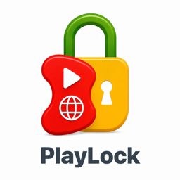

子どものiPhone時間を、かんたんに。
設定は質問に答えるだけ。「今すぐロック」も解除も、保護者の iPhone からワンタップ。居場所の確認も同じアプリでできます。
料金: 初回設定から 7 日間はすべての機能を無料でお試しいただけます。
その後は 月額 500 円 / 年額 5,000 円 / 買い切り 25,000 円 のいずれか(価格は税込・App Store の表示が優先します)。
メッセージの内容、写真、閲覧履歴は取得しません。位置情報や利用状況は、その家族の保護者だけが見られます。広告や分析には使いません。
対応: iOS 16 以降の iPhone 2 台(保護者用・お子さま用)。iPhone の「スクリーンタイム」機能を使います。
アプリの紹介と開発の進み具合: note マガジン「PlayLock」
App Store での配信は準備中です(2026 年 9 月時点)。公開後にこのページへリンクを載せます。